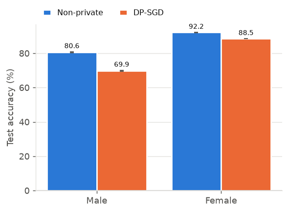
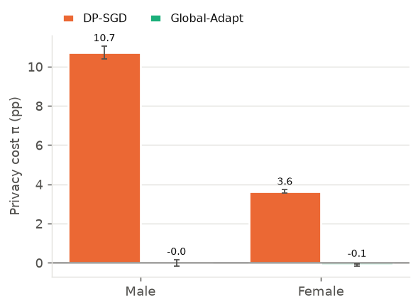
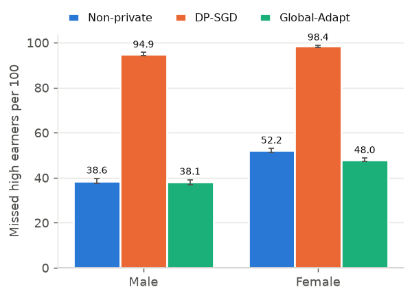
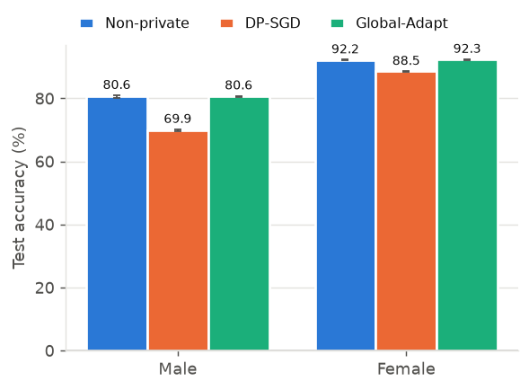

Code
import pandas as pd
from dpdisparity import analysis as A, plots, runner
SOURCE = "legacy" # "legacy" = frozen dp-testing runs; "rerun" = train any missing runs with this repo's pipelineReal people, equal-sized groups: who pays for privacy?
The MNIST page shows the effect under controlled conditions. Adult asks whether it shows up for real people. The data is the UCI Adult dataset (1994 US Census), the task is predicting whether income exceeds $50K, and the protected attribute is sex.
The design choice that matters most is that we balance the two groups to about 14,700 people each. Neither group is underrepresented, so any extra cost one group pays comes from how hard that group is to learn, not from how rare it is. In this setup men are the harder group: they have lower accuracy and, per Esipova et al. (Fig. 8), larger gradients. This is a subgroup disparity on balanced groups, not the class imbalance studied on MNIST.
fnlwgt and binarize race (white / non-white);import pandas as pd
from dpdisparity import analysis as A, plots, runner
SOURCE = "legacy" # "legacy" = frozen dp-testing runs; "rerun" = train any missing runs with this repo's pipelineA.settings_table("adult")| epochs | lr | batch_size | σ | C | Z₀ | τ | σ₂ | η_Z | δ | |
|---|---|---|---|---|---|---|---|---|---|---|
| Non-private | 20 | 0.01 | 256 | 1e-06 | ||||||
| DP-SGD | 20 | 0.01 | 256 | 1.0 | 0.5 | 1e-06 | ||||
| Global-Adapt | 20 | 0.2 | 256 | 1.0 | 0.5 | 50.0 | 1.0 | 10.0 | 0.1 | 1e-06 |
results = runner.load("adult", SOURCE)
df = A.to_frame(results)
acc = A.summarize(df, "accuracy")
SEXES = ["Male", "Female"]Without privacy, the model is about 81% accurate for men and 92% for women. Part of the reason is the base rate. Only about 12% of women in the test set earn over $50K, against about 32% of men, so for women “≤ $50K” is usually the right answer.
base = df[df.method == "nonprivate"].assign(share_over_50k=lambda d: 100 * (d.fn + d.tp) / d.n)
base = base.groupby("group")[["n", "share_over_50k"]].mean().loc[SEXES]
base.assign(always_predict_under_50k=100 - base.share_over_50k).round(1)| n | share_over_50k | always_predict_under_50k | |
|---|---|---|---|
| group | |||
| Male | 2964.0 | 31.5 | 68.5 |
| Female | 2922.8 | 11.6 | 88.4 |
With DP-SGD (C = 0.5, σ = 1, ε ≈ 3.41), both groups lose accuracy, but men lose much more: about 11 points against about 4 for women.
plots.group_bars(acc[acc.method != "global_adapt"], SEXES, "Test accuracy (%)", label_groups=SEXES);
The privacy cost is π_k = A_k(non-private) − A_k(private), paired by seed. The disparity measure is the privacy-cost gap |π_Male − π_Female|.
plots.group_bars(A.summarize(A.privacy_costs(df), "pi"), SEXES, "Privacy cost π (pp)", label_groups=SEXES);
Accuracy alone makes DP-SGD look tolerable for women (about 88.5%). The false-negative rate shows more: it is the share of real high earners the model labels “≤ $50K”. Under DP-SGD the model misses about 95% of high-earning men and 98% of high-earning women, so it almost always predicts “≤ $50K”. Its accuracy is close to that of the constant “always ≤ $50K” predictor in the table above: 88.4% for women and 68.5% for men.
plots.group_bars(A.summarize(df, "fnr"), SEXES, "Missed high earners per 100", label_groups=SEXES);
An observation of ours to examine further, not a published result. A model that falls back to the majority answer loses roughly the accuracy it had above that constant baseline:
| Sex | Non-private accuracy above the constant baseline | DP-SGD privacy cost |
|---|---|---|
| Men | about 12 points | about 10.7 |
| Women | about 4 points | about 3.7 |
So on Adult, the privacy-cost gap may partly reflect how much each group’s non-private model had learned beyond the base rate. That is in line with Demelius et al. (2025): conclusions depend on the metric chosen. It is a reason to report FNR and similar measures next to accuracy.
Global-Adapt scales every gradient by the same factor C/Z instead of clipping large gradients separately, and learns Z privately. Its noisy count is charged to the privacy budget, giving ε ≈ 3.42 instead of 3.41. It uses no group labels.
plots.group_bars(acc, SEXES, "Test accuracy (%)", label_groups=SEXES);
plots.gap_bars(A.gaps(df, "adult"), "adult");
On balanced Adult, Global-Adapt recovers essentially all of the accuracy DP-SGD lost. Both groups end within about 0.1 points of the non-private model, and the privacy-cost gap falls from about 7 points to about 0.1 ± 0.2. The false-negative rates also fall back to about their non-private levels, so the model is actually identifying high earners again rather than falling back to the majority answer.
A caveat on the comparison: Global-Adapt is trained with a learning rate of 0.2 and DP-SGD with 0.01, following the paper. Part of the improvement may come from the larger step size rather than the scaling rule. A matched-learning-rate check is a planned next step.
Every value below is mean ± standard error over 5 seeds, in percentage points. “Ours” rows are our runs. The other rows are Esipova et al.’s published numbers.
A.comparison_table(results, "adult")| Acc Male | Acc Female | π Male | π Female | Gap π Male,Female | ε | ||
|---|---|---|---|---|---|---|---|
| Method | Source | ||||||
| Non-private | Ours | 80.6 ± 0.4 | 92.2 ± 0.1 | – | – | 0 (by definition) | – |
| Esipova et al. (2023), Table 4 | 80.5 ± 0.4 | 92.2 ± 0.1 | – | – | 0 (by definition) | – | |
| DP-SGD | Ours | 69.9 ± 0.3 | 88.5 ± 0.1 | 10.7 ± 0.3 | 3.6 ± 0.1 | 7.1 ± 0.3 | 3.41 |
| Esipova et al. (2023), Table 4 | 69.9 ± 0.4 | 88.5 ± 0.1 | 10.6 ± 0.3 | 3.6 ± 0.1 | 6.9 ± 0.3 | – | |
| Global-Adapt | Ours | 80.6 ± 0.3 | 92.3 ± 0.1 | -0.0 ± 0.2 | -0.1 ± 0.1 | 0.1 ± 0.2 | 3.42 |
| Esipova et al. (2023), Table 4 | 80.7 ± 0.4 | 92.3 ± 0.1 | -0.1 ± 0.1 | -0.1 ± 0.1 | 0.0 ± 0.1 | – |
Our results closely track the paper:
Points still to verify against the authors’ code (fair-dp@c61a163):
The numbers above come from the original dp-testing runs. All of Adult was retrained here with this repository’s ported pipeline (uv run python scripts/sweep.py --dataset adult), on CPU and with newer library versions. Exact agreement is not expected, because GPU vs CPU and different library versions change the random noise draws. Close agreement shows the port behaves the same.
On ε: for seeds 1 and 2 the balanced training set gives 93 batches per epoch, so the sampling rate is q = 1/93. Opacus then takes 92 steps per epoch, which gives ε ≈ 3.37 for those seeds in the rerun. The dp-testing files report 3.41 for every seed, which matches q = 1/92. The legacy figure is therefore slightly conservative for two seeds.
pd.DataFrame({"dp-testing": A.headline(runner.load("adult", "legacy"), "adult"),
"this repo (rerun)": A.headline(runner.load("adult", "rerun"), "adult")})| dp-testing | this repo (rerun) | |
|---|---|---|
| Non-private: Acc Male | 80.57 | 80.59 |
| Non-private: Acc Female | 92.18 | 92.18 |
| DP-SGD: Acc Male | 69.86 | 69.90 |
| DP-SGD: Acc Female | 88.54 | 88.54 |
| Global-Adapt: Acc Male | 80.57 | 80.68 |
| Global-Adapt: Acc Female | 92.29 | 92.30 |
| DP-SGD: gap | 7.07 | 7.05 |
| Global-Adapt: gap | 0.10 | 0.04 |
| DP-SGD: ε | 3.41 | 3.39 |
| Global-Adapt: ε | 3.42 | 3.40 |
A.run_info(results)| seeds | epsilon | delta | final_Z | source | |
|---|---|---|---|---|---|
| method | |||||
| Non-private | 5 | – | – | – | dp-testing |
| DP-SGD | 5 | 3.408 | 1e-06 | – | dp-testing |
| Global-Adapt | 5 | 3.415 | 1e-06 | 6.98 | dp-testing |